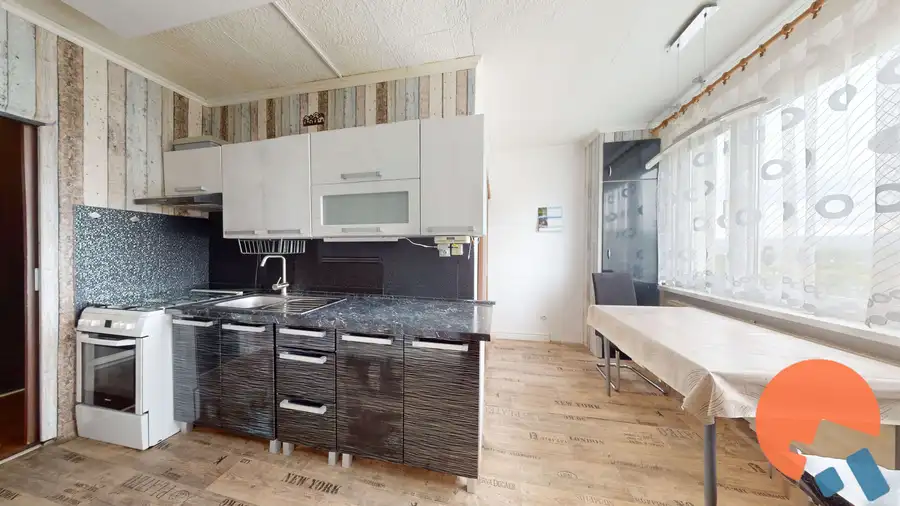
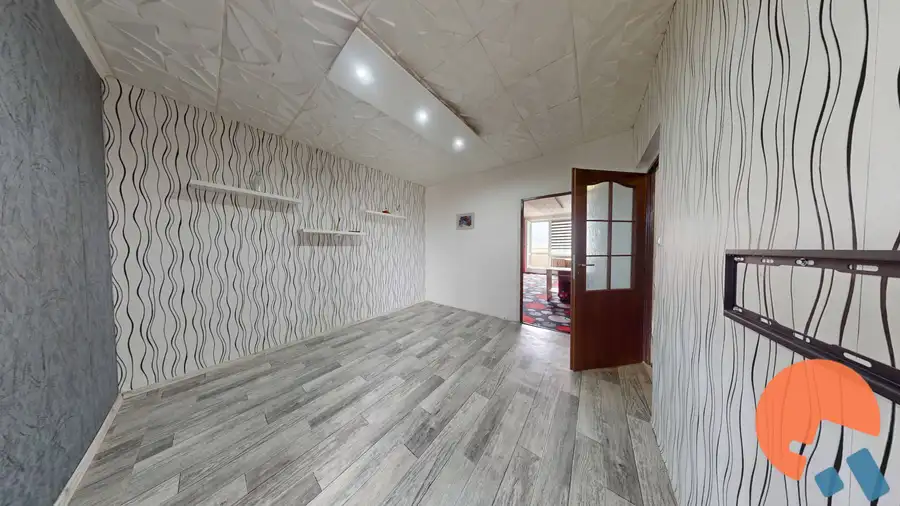
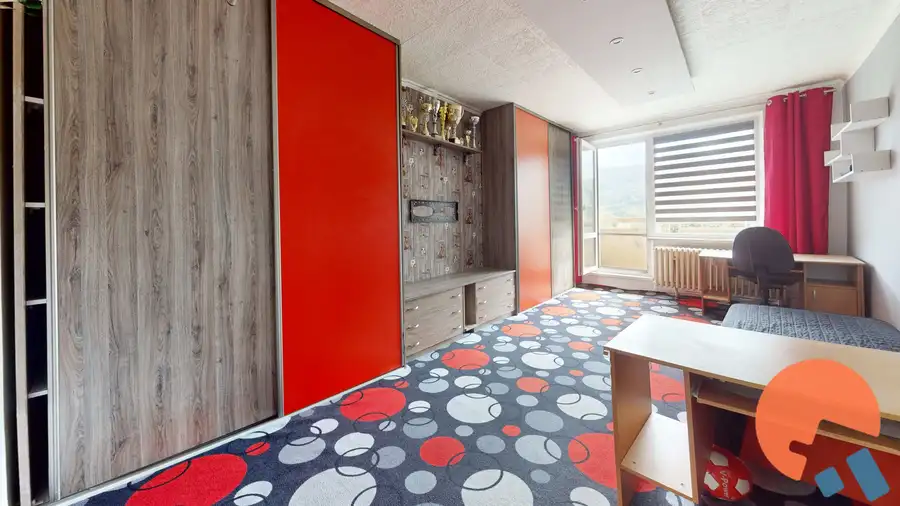
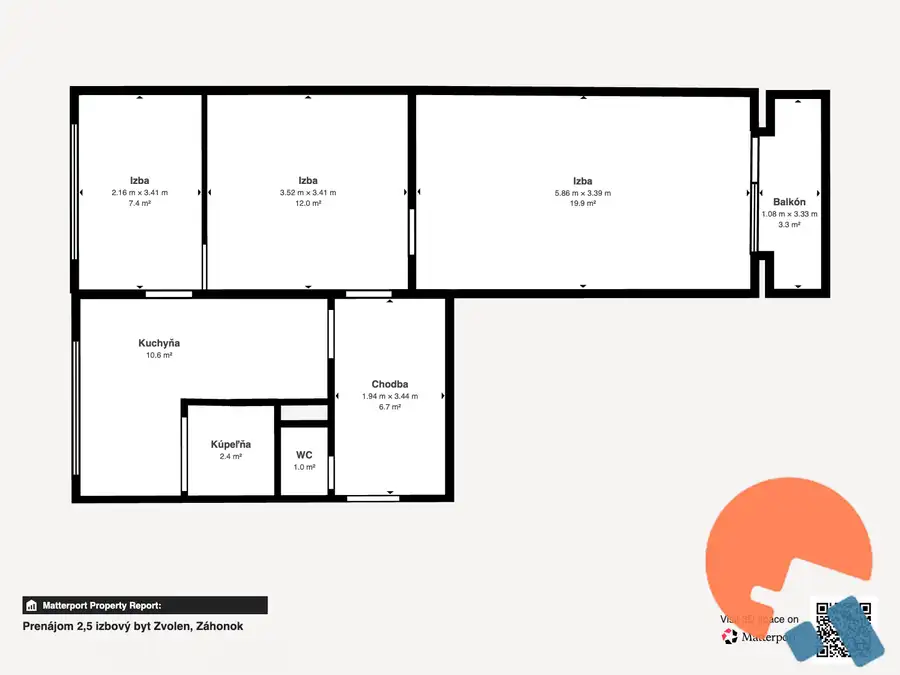

Prenájom 2,5 izbový byt Zvolen, Záhonok
Zvolen




- Dispozícia2-izbový
- Plocha64 m²
- Poschodie5. z 5
- StavČiastočná rekonštrukcia
- VlastníctvoOsobné
O nehnuteľnosti
Ponúkame na prenájom priestranný 2,5-izbový byt na ulici Záhonok vo Zvolene, Byt s celkovou podlahovou plochou 64 m² ponúka veľkorysý priestor, praktickú dispozíciu a balkón. Byt sa nachádza na 5p. s novým výťahom a k bytu prislúcha aj pivnica.Byt je vhodný pre jednotlivca, pár, prípadne menšiu rodinu, ktorá hľadá pohodlné bývanie s dostatkom úložného aj obytného priestoru.Dispozícia bytuByt ponúka veľkú obytnú izbu o rozlohe takmer 20 m² v ktorej je vstavaná skriňa, druhá takáto izba bola predelená sadrokartonovou priečkou na 2 menšie izby (12 m²) a (7,4 m²), samostatnú kuchyňu, kúpeľňu so sprchovacím kútom, WC s umývadlom, chodbu, kde je vstavaná skriňa s chladničkou a balkón 3,3 m².Byt má plastové okná, žalúzie deň/noc, bezpečnostné vchodové dvere, podlaha - guma v imitácii plavajúcej podlahy, vymenené interierové dvereZariadenie a vybavenie bytu je možné vidieť na priložených fotografiách a v 3D prezentácii.https://my.matterport.com/show/?m=9XsiLoczNSCV prípade požiadaviek, je možné byt dozariadiť alebo vypratať.Lokalita – Záhonok, ZvolenByt sa nachádza v pokojnej obytnej lokalite Záhonok, ktorá ponúka kombináciu mestského bývania a blízkosti prírody. Daná lokalita ponúka množstvo zelene s dobrou dostupnosťou občianskej vybavenosti. V blízkosti je Zvolenská priehrada, obchody, 2 MŠ, ZŠ, zdravotné stredisko, lekáreň, pošta, ihriská a dobré možnosti parkovania.Cena Cena prenájmu: 600 €/mesiac vrátane energií pre 2 osoby.Pri podpise zmluvy sa platí 1 mesačný nájom, vratný depozit vo výške 1 mesačného nájmu a 600€ provízia RK.Spolu pri podpise 1.800€V prípade záujmu o obhliadku alebo bližšie informácie ma neváhajte kontaktovať.Ing. Dana Zdychová0915 900 237dana@zdychova.sk
Parametre
- Cena vrátane energií
- Áno
- Druh
- 2 izbový byt
- Dátum zverejnenia
- 30. 09. 2026
- Energetický certifikát budovy
- nie je
- Podlažie
- 5
- Počet balkónov
- 1
- Počet nadzemných podlaží
- 5
- Počet pivníc
- 1
- Prechodová izba
- Áno
- Stav nehnuteľnosti
- Čiastočná rekonštrukcia
- Typ
- Prenájom
- Typ konštrukcie
- Panelová
- Umiestnenie
- Posledné podlažie
- Vlastníctvo
- Osobné
- Vybavenie
- Balkón, Pivnica, Verejné parkovanie, Výťah
- Vykurovanie
- Lokálne
- Úžitková plocha
- 64 m²